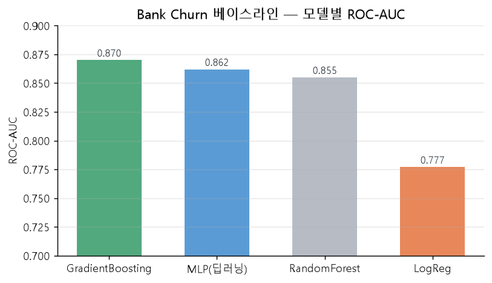
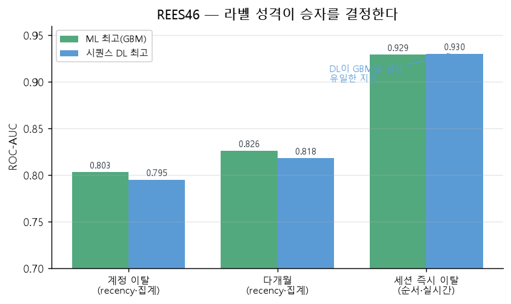

CH 01출발 — 팀 배정과 베이스라인(Bank Churn)#
학습
18일 팀이 배정되고 19일부터 본격 작업을 시작했다. 필수 산출물은 셋 — 데이터 전처리 결과서, 학습 결과서, 학습된 모델이었다. 먼저 작은 정형 데이터(Bank Churn, 학습 8,000 / 테스트 2,000, 이탈 20.4%)로 베이스라인을 세웠다. ML 세 종류(로지스틱·랜덤포레스트·그래디언트부스팅)와 DL(MLP)을 같은 데이터로 비교했다.
의문 → 기준
비즈니스 목표는 "이탈할 고객을 미리 찾아 잡는다"이므로 Recall(놓치지 않기)을 중시하되, 임계값에 흔들리지 않는 ROC-AUC를 모델 선정 1차 기준으로 삼았다.
모델 Accuracy Precision Recall F1 ROC-AUC GradientBoosting 0.869 0.782 0.494 0.605 0.870 ⭐ MLP(딥러닝) 0.783 0.480 0.764 0.590 0.862 RandomForest 0.863 0.788 0.447 0.571 0.855 LogisticRegression 0.714 0.387 0.700 0.499 0.777

CH 02전처리를 더 짜낼 수 있을까 — 베이지안 최적화의 반전#
의문 → 실험
인코딩·스케일링·이상치·불균형 처리(SMOTE 등)와 모델 하이퍼파라미터를 한꺼번에 optuna(TPE) 40회 탐색으로 돌렸다. 5-fold 교차검증 AUC로 평가했다.
CH 03데이터를 키우다 — REES46 2,069만 건과 recency의 지배#
학습 → 시행
최종 데이터를 REES46 화장품 이커머스 로그(2019-10~2020-02, 약 2,069만 이벤트)로 바꿨다. 정형 피처(RFM류)와 주별 행동 시퀀스(view·cart·purchase)를 함께 만들고, "계정 이탈"(관찰 기간 뒤 활동 없음)을 라벨로 ML(GBM 등)과 시퀀스 DL(RNN·LSTM·Transformer)을 같은 표본에서 비교했다.
단계 표본/시퀀스 ML 최고 시퀀스 DL 최고 승자 온라인리테일 3,317명 · 월9스텝 GBM 0.745 LSTM 0.742 ML REES46 1개월 60,000명 · 일21스텝 GBM 0.803 Transformer 0.795 ML(근소) REES46 5개월(다개월) 80,000명 · 주18스텝 GBM 0.826 ⭐ Transformer 0.818 ML(근소)
recency(마지막 활동 후 경과, 중요도 0.094로 압도적)로 거의 환원돼, 순서·패턴이 정답을 거의 안 가른다.CH 04반전 — 라벨을 다시 세우자 DL이 GBM을 넘었다#
의문 → 재정의
라벨을 네 가지로 나눠 같은 조건에서 비교했다 — base(계정 이탈), A(세션 즉시 이탈: 구매 없이 세션 종료, 입력=구매 직전 이벤트 순서), B(단기 이탈), C(다음 활동까지 시간·회귀). A만 순서가 본질인 과제다.
LSTM (시퀀스 DL) 0.930 ⭐ ← 처음으로 GBM을 넘음 GBM (정형) 0.929 MLP (정형 DL) 0.928 Transformer (시퀀스) 0.927 LogReg (정형) 0.911 참고) recency형 라벨에선 여전히 GBM 우위: base 0.803 · 다개월 0.826

CH 05실시간과 서비스 — 리플레이 예측과 GAJIMA 앱#
학습 → 시행
운영 사이트가 없어도 실시간을 검증할 수 있었다. 과거 로그를 시간순으로 한 건씩 흘려보내는 리플레이(replay)가 곧 실시간 이벤트 스트림과 같기 때문이다. 세션 이벤트를 1..t까지만 보여주며(미래 누수 차단) 이탈 확률이 갱신되는 과정을 재생하고, "이벤트 몇 개를 보면 충분히 정확한가(정확도@k)"를 측정했다.
시행 — 데모 앱(GAJIMA)
예측을 실제 서비스 형태로 감쌌다. InsightFace 얼굴 로그인(등록 얼굴과 비교 인증)에 성공한 사용자만 이탈 예측 대시보드를 쓰는 Streamlit 앱이다. 로컬 백엔드(FastAPI)를 cloudflared 터널로 노출하고 Vercel 프런트(gajimasimul)와 연결해, 고객을 조회하면 이탈 확률과 대응 액션(SNS·할인·연관추천)이 뜨도록 만들었다.
CH 06종합 회고 — 발표와 배운 점#
잘한 점 / 부족했던 점 / 다음 한 수
- 잘한 점 — 작은 데이터(Bank)에서 대규모(REES46 2,069만)까지 스케일을 올리며, 라벨 4종(base/A/B/C)을 같은 조건으로 비교해 "라벨이 승자를 정한다"를 수치로 증명했다(세션 A: LSTM 0.930 > GBM 0.929).
- 부족했던 점 — DL이 이긴 폭이 0.001로 근소했고, 개입 효과는 실험이 없어 가정에 머물렀다. 베이지안 최적화는 이 데이터에선 이득이 거의 없었다(model 중요도 0.997).
- 다음 한 수 — 세션 라벨에 시간 간격 임베딩·하이브리드(통계+시퀀스)·멀티태스크를 더해 0.930의 천장을 올리고, 조기 경보(정확도@k)를 서비스 지표로 다듬는다.
- 불균형엔 정확도 한 숫자를 믿지 말 것. Recall·F1·AUC로 "어떤 오류를 내는 모델인가"를 본다(이탈은 Recall 중시).
- 병목을 먼저 측정. 이 데이터의 성능은 전처리(0.003 미만 기여)가 아니라 모델 선택(0.997)이 지배했다.
- 라벨의 성격이 승자를 정한다. recency·집계 → GBM, 순서·세션 → 시퀀스 DL. 모델 교체가 아니라 문제 재정의가 핵심이다.
- 실시간은 순서 처리다. 로그 리플레이로 라이브 없이 실시간을 검증·시연할 수 있다.
📚 근거 출처
- 팀 프로젝트 코드·리포트 —
ml_workspace/team_project_churn/(src/train_ml·train_dl·compare,reports/02 학습결과서·09 다개월 시퀀스DL·11 라벨별 base/A/B/C·12 실시간 구현·16 전처리 베이지안) - 데모 앱 —
ml_workspace/face_churn_app_mysql(InsightFace 얼굴 로그인 + 이탈 예측 Streamlit), GAJIMA(gajimasimul) 배포 - 데이터 — Bank Churn(
Churn_Modelling.csv) · REES46 Cosmetics(2019-10~2020-02) - 공식 문서 — scikit-learn · XGBoost · PyTorch · optuna